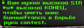

Жабры II: Растворение Сахара
Гэндальф Серая Хламида с коня

Ночь. Улица. Фонарь. Кокашки. Нет, не кокашки, содомит. Рвут в клетку зрители рубашки, И на трибунах чад стоит. Ответный матч. Футбол. Костика. Технические ноль и три. Эстеты, Богебьерг и крики: "Алмейда, жопу подотри!" Контратаки. Кикса. Линдаль. По центру. Промах и позор. И позже незабитый пендаль, Футбол - не сахар, Сахар Ор! Шипы. Хайло. Слюна с зубами. Остынет март, взъярит апрель. Тень мастера парит над нами. Камачо. Саенс. Рафаэль. Их десять. Нету сил держаться. Пас слева. Эвальд Хеллеманс. Удар - и гол. А если вкратце, То "Смрад" не упустил свой шанс. Удар. Удар. Еще удар. Все мимоме. Но вот Борис Будкеев, Краснодар, Проводит апперкот. "Смрад". "Кикса". "Барса". "Коло-Коло". Бразильцы. Негры. Чичимон. Прививка. В попу. Боль укола. Забитый паклей стадион. Победа "Смрада". One to nothing. Но все бессмысленно, как встарь. Победа "Киксы". Крики "нафиг!". Ночь. Жабры. Улица. Фонарь.